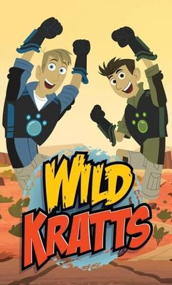

Os irmãos Kratt são de verdade!
Por: Mikael de O.
Chris e Martin Kratt, os protagonistas de Aventura com os Kratts, são irmãos de verdade e zoólogos na vida real. Eles já fizeram outros programas de natureza antes, como Zoboomafoo e Kratts Creatures. A ideia das “Creature Powers” surgiu porque eles queriam mostrar tudo o que os animais são capazes de fazer, mesmo o que as câmeras não conseguiam gravar na natureza.
Fonte: Wikipedia – Kratt brothers